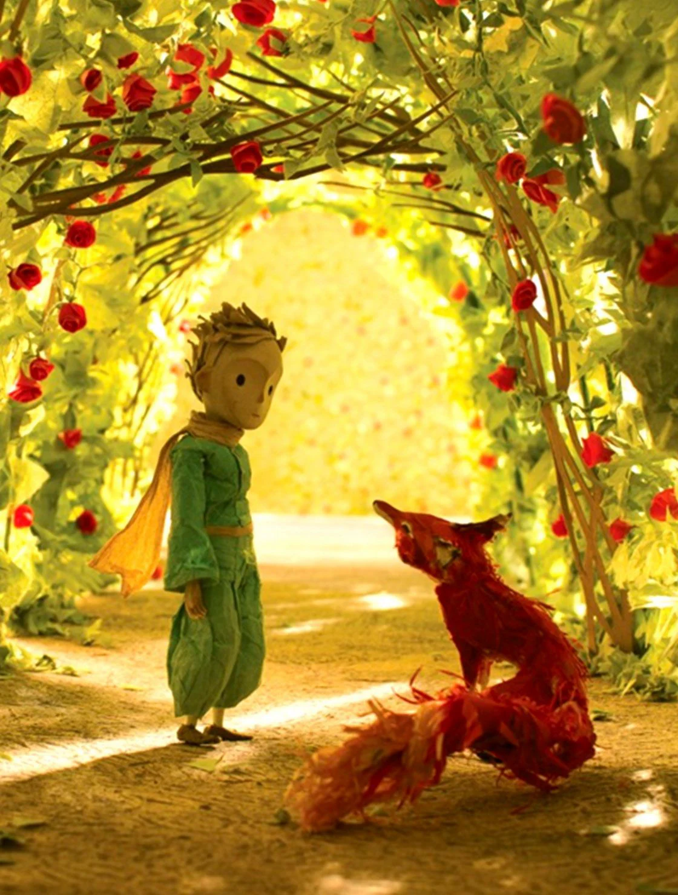
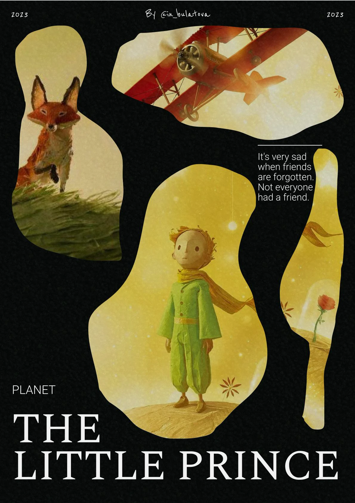

Animation, Adventure, Fantasy
2015
108 minutes
Mark Osborne
The Little Prince follows a young girl whose carefully planned life is transformed when she befriends her eccentric elderly neighbor, the Aviator. Through his stories about the Little Prince and his travels among the stars, she discovers the importance of imagination, friendship, love, and seeing the world with an open heart.